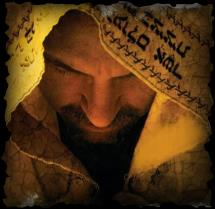
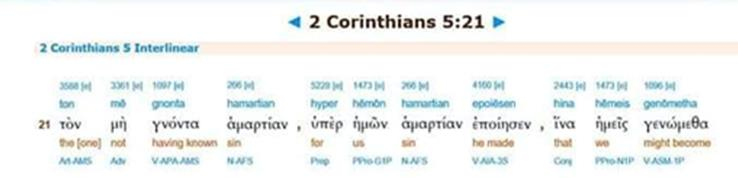
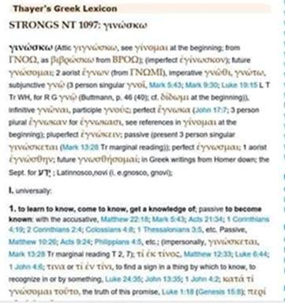

Contents

Qorintiyim Bet/2 Corinthians 521For our sake יהוה made יהושע to be sin who knew no sin, so that in him we might become the righteousness of Elohim.
This is the Scripture that the Dragon uses to suggest that the Plan of Salvation depends on Yahushua being a flawless half-god from birth and that his sacrifice is only effective because he was flawless and was killed for OUR sin, not his own.
However, this is contrary to the plan of salvation and the clear Scriptures which say that יהושע came in the flesh, his flesh was sinful, and his sins were forgiven through the mikveh by The WAY, and he was a man.
Romiyim/Romans 3
for ALL men have sinned and fall short of the glory of יהוה.
The translators intentionally twisted the Scriptures to blaspheme יהוה and lead us astray from The Way.
The Truth in Context
The Definition of “sin”:
Disobedience to יהוה’s Will.
The Definition of the word translated “to know no” in Qorintiyim Bet/2 Corinthians 5:21 is :
Thayer's Greek: 1097.
γινώσκω (ginóskó) – P rimary definition: 1. to learn to know.
This is the TRUE translation of the verse we take out of context, and implies that Yahushua was sinless and perfect from birth:
Qorintiyim Bet/2 Corinthians 521For our sake (to be mediator Timotiyos Aleph 2:5) יהוה made יהושע (a High Priest Hebrews 5 and Zekaryah/Zechariah 3) who did not learn to know (G1097) disobedience (I'brim/Hebrews 5:8-9), to be a sin offering for us (Rom 8:3), so that in covenant him, we too might have the Righteous Requirements of the Torah (Law) fulfilled in us (Rom 8:4).
Timotiyos Aleph/1 Timothy 25For there is one Elohim (יהוה) and one MEDIATOR between יהוה and mankind, THE MAN יהושע the Messiah
Romiyim/Romans 83For what the law was powerless to do because it was weakened by the flesh, יהוה did by sending his own Son (as High Priest) in the likeness of sinful flesh to be a sin offering. And so he condemned sin in the flesh (by learning obedience and being perfected), 4in order that the righteous requirement of the law might be fully met in us (through Mikveh like it was in יהושע who told Yochanan "let me be Mikveh'd now, to fulfill all the Righteous Requirements of The Law")
Yahushua was not born perfect or obedient, but He learned obedience by being punished for disobedience as a Son. He was not born perfect but had to be PERFECTED in Righteous obedience to יהוה.
I'brim/Hebrews 58 though he was a son, yet he LEARNED (G1097) OBEDIENCE (not disobedience/sin) by the things (discipline by a loving Father I'brim/Hebrews 12:5-7) which he suffered (for disobedience). 9And HAVING BEEN PERFECTED (through the process of sanctification Yochanan 17:19… he was not born that way, he was born disobedient and opposed to יהוה which is the definition of “in the flesh” Sarki), He BECAME the author (life example) of (how we obtain) eternal salvation to all who obey him (and follow his example).
Yahushua must be the human Messiah to qualify as a blood sacrifice for mankind. He was to be fully human in every way, in other words, "He was in no way but man," or in no way Elohim, a demigod, or יהוה in the flesh. Yahushua was to "become" a merciful and faithful High Priest in the service of יהוה. All High Priests (including Yahushua) were chosen from among men, not gods.
Ib’rim/Hebrews 217For this reason he (Yahushua) had to be made like them (he was made human), fully human in every way, in order that he might become a merciful and Faithful High Priest (who are chosen from among men) in service to יהוה.
We see that Yahushua was chosen High Priest from among men and in that role as High Priest made sacrifices for himself as well as for the people:
Ib’rim/Hebrews 51For every High Priest taken from among men is appointed on behalf of men in things pertaining to Elohim, in order to offer both gifts and sacrifices for sins; 2he can deal gently with the ignorant and misguided, since he himself also is beset with weakness; 3and because of it he is obligated to offer sacrifices for sins, as for the people, so also for himself
We see that it was יהוה who "made" Yahushua perfect through suffering and then Mikveh, not that Yahushua in his own right was born and lived that way:
Ib’rim/Hebrews 210In bringing many sons and daughters to Glory, it was fitting that יהוה, for whom and through whom everything exists, (יהוה) should make the pioneer of their Salvation (Yahushua) perfect through what he suffered.
What Sha’ul is saying in Qorintiyim Bet/2 Corinthians 5 is what he is saying in, Romiyim/Romans, I'brim/Hebrews, and his other writings. If we do not step out of the context of all Sha’ul's writings, we see again that it was as High Priest that Yahushua did not sin!
I'brim/Hebrews 414Therefore, since we have such a great HIGH PRIEST who has passed through the heavens (passed the test of The Heavenly Scroll), יהושע the first born again Son of יהוה, let us hold firmly to what we profess. 15For we do not have a HIGH PRIEST who is unable to sympathize with our weaknesses (because he was some kind of perfect half-god), but we have A HIGH PRIEST who was tempted in every way that we are, yet was without sin (as High Priest see Zekaryah/Zechariah Chapter 3).
AFTER he had been perfected in Righteous Obedience through suffering and יהוה forgave his sin through Mikvah.
Zekaryah/Zechariah 33Now יהושע was dressed in filthy clothes (metaphor of sin) as he stood before the angel. 4The angel said to those who were standing before him, “Take off his filthy clothes.” Then יהוה said to יהושע, “See (after taking off his filthy rags), I have taken away your sin (fifthly rags Yeshayahu 64:6), and I will put fine garments (of the High Priest) on you.”
Kepha Aleph/1 Peter 222“He committed no violence, and no deceit was found in his mouth.” 23When they hurled their insults at him, he did not retaliate; when he suffered, he made no threats. Instead, he entrusted himself to him who judges justly. 24“He himself bore our sins” in his body on the stake, so that we might die to sins and live for Righteousness; “by his wounds you have been healed.” 25For “you were like sheep going astray,” but now you have returned to the Shepherd and Overseer of your souls.
In Kepha Aleph/1 Peter 2 above, the prophet Yeshayahu/Isaiah is quoted as saying (Yeshayhau 53:9) that he did not commit violence and he did not lie. Yeshayahu and Kepha Aleph address the accusations against YAHUSHUA in Judgment. He was tried for resisting the Roman emperor (inciting violence) and for lying about his identity as יהוה (blasphemy).
Yeshayahu/Isaiah 539And He was appointed a burial-site with the wrong, and with the rich at His death, because He had done no violence, nor was deceit in His mouth.
Yahushua was innocent of both charges (he did not commit violence and did not lie because he said he was יהוה's son, not יהוה). Yeshayahu/Isaiah also did not say anything about Yahushua's sinful condition from birth. The point in Kepha Aleph/1 Peter 2 is that he, like the Passover Lamb, bore our sins in his own body (sin offering) on the stake, not that he was born and lived sinless all his life.
Yahushua was declared not guilty during his trial, but despite being innocent, he was still executed. Once again, he went through a traditional purification process for his own sins, followed by taking on the sins of the world at Mikvah, and then יהוה removed those dirty rags representing the world's sin. Yahushua was falsely accused of the charges brought against him. So is the doctrine that he had to live free of sin from birth. Scripture does not state or demand that The Messiah make that declaration or that it is required.
We must understand the Messiah's "fundamental teachings" regarding His Mikvah; as Sha’ul taught in:
Ib’rim/Hebrews 61Therefore, having left the word of the beginning of the Messiah, let us go on to perfection, [Mat_5:48] not laying again the foundation of repentance from dead works, and of belief toward Elohim, 2of the teaching of immersions (plural), and of laying on of hands, and of resurrection of the dead, and of everlasting judgment.
In this case, we see him as sinless from Mikvah's perspective, as Sha’ul's statements in Ib’rim 6 and Zekaryah 3 show us. The only requirement regarding sin is that in the eyes of יהוה, all his sins are ritually cleansed. Through the mikvah!
To be a Messiah, he does not have to be born free from sin (this is true for everyone, no one is born in sin, they are born in a sinful or sinful body) and he has to live a completely sin-free life; However, since "everyone" has sinned, and it is impossible even for Yahushua to live a lifetime without sin, we return to the Torah's requirement of a mikvah. However, Yahushua lived without sin for 70 weeks after the Mikvah. He was a SPOTLESS lamb that was about a year old.
Yahushua's sins were forgiven when he learned obedience, then he became a high priest, and then he was sinless. He became the PERFECT sacrifice or "sin offering", which means, he offered his life as an example for us all to follow him.
Yochanan/John 1315I have set you an example that you should do as I have done for you.
Yochanan/John Aleph2
…5 But if anyone keeps His word the love of יהוה has been truly perfected in him. By this we know that we are in (an adoption covenant with) יה :וה6 Whoever claims to abide in (Covenant with) יהוה must walk as יהושע walked (being perfected in Righteous Obedience and sanctified by His Word)
Yochanan/John 1719 "And for their sakes I sanctify myself (by learning obedience to His Word), that they also might be sanctified through the truth. 20Neither pray I for these alone, but for them also which shall believe on me through their word (enter into covenant); 21That they all may be one; as You, Father, are in (covenant with) me, and I in (covenant with) You, that they also may be one in (covenant with) us: that the world may believe that You have sent me (to show us all The Way by example)."
The interlinear provided indicates that the word "knew no" is G1097 and has been mistranslated. Thayer's primary definition for this word is "learn to know" and not "knew no".


Is there proof that Yahushua felt convicted by his conscience?
If it is the case, as Scripture declares, that Yahushua had to be perfected and was not born perfect. If it is true, as Scripture declares, that Yahushua did not live his entire life in a state of perfection. Is there evidence that Yahushua's conscience did convict him of his imperfection?
Mattithyahu/Matthew 1916And, behold, one came and said unto him, Good Master, what good thing shall I do, that I may have Eternal Life? 17And he said unto him, why do you call me good? There is none good but one, that is, יהוה: but if you want to enter into Eternal Life, keep the Commandments (of יהוה).
It seems that the promise of eternal life is conditional for us and based on our obedience to the Torah/Law, as it was for Yahushua. No matter what Christianity teaches us, we cannot escape this part of The Way.
Once again, we observe Yahushua's apparent resistance to יהוה 's will, leading to his conviction. Yahushua started to feel uncertain and regretful about the Passover Lamb situation, leading to feelings of deep sadness and remorse. His own desires overpowered him in this situation, despite knowing that it was יהוה's will and his fate to die as the Passover Lamb.
Mattityahu/Matthew 26 37 He took Kepha and the two sons of Zebedee along with him, and he began to be sorrowful and troubled. 38 Then he said to them, “My soul is overwhelmed with sorrow to the point of death (another way of saying "I'm scared to death" because he knew he had not lived a “sin free life”). Stay here and keep watch with me. (While I go try and get out of it)” 39 Going a little farther, he fell with his face to the ground and prayed, “My Father, if it is possible, may this cup be taken from me. Yet not as I will, but as You will.”
Conclusion
When the Scriptures are understood apart from the pagan doctrine of the Trinity and the false "incarnation" doctrine, not only do we discover that the Trinity is not taught in Scripture, but we also discover the emergence of a human High Priest. Zekaryah/Zechariah (who was cleansed from sin by Mikvah) said that the High Priest Yahushua was “made perfect” by יהוה and then after living sinless for about a year, he was The perfect lamb for the Passover (the "lamb of the year").
All High Priests were ceremonially purified and expected to be without fault, morally pure, and separated from those who committed sins. They were responsible for leading the Passover and Atonement rituals. The only distinction is that the others died and remained deceased, while Yahushua died and was resurrected.